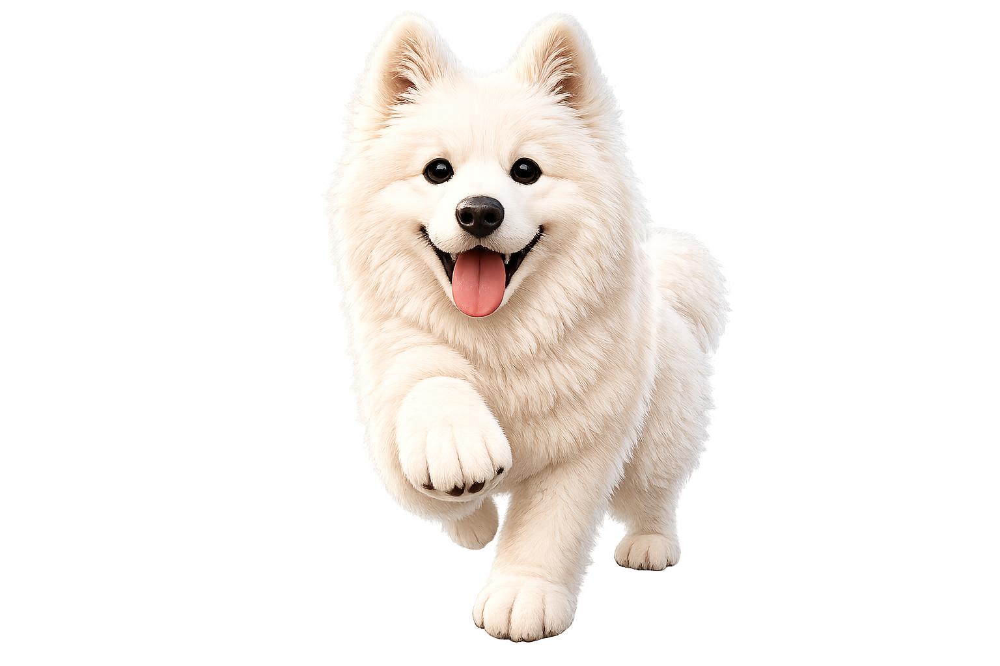
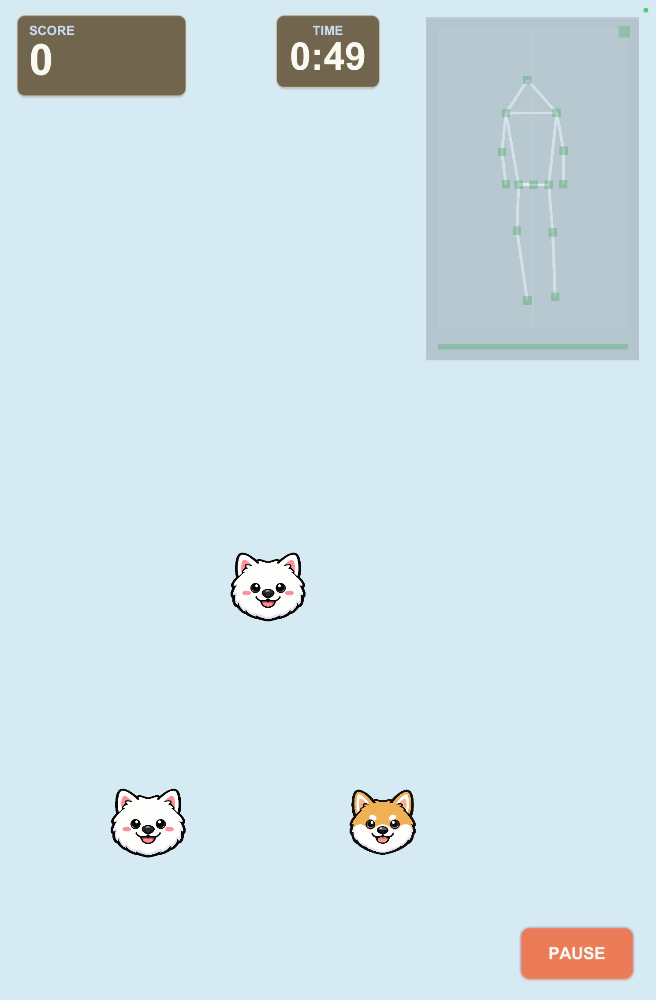

左右ステップ
片足を横へ一歩出し、中央へ戻します。
モーション見本
片足だけを横へ一歩歩き続けず、一歩ごとに中央へ戻ります。
ゲーム画面の変化
犬が1レーン移動一歩出した方向へ、犬が横に移動します。
FIRST PLAY GUIDE
最終更新日：2026年8月4日
DogDropは、iPhone／iPadの前面カメラで身体の動きを読み取り、左右ステップとスクワットで犬を操作する運動ゲームです。

ABOUT DOGDROP
端末の前でできる、シンプルな運動ゲーム
左右へ一歩とスクワットで、犬を動かします。最初はLevel 1と1分プレイがおすすめです。
身体の動きで犬を操作し、目標のレーンへ移動させます。
片足を横へ一歩出し、中央へ戻します。
モーション見本
片足だけを横へ一歩歩き続けず、一歩ごとに中央へ戻ります。
ゲーム画面の変化
犬が1レーン移動一歩出した方向へ、犬が横に移動します。
椅子に座るように腰を下げます。
モーション見本
無理のない深さでしゃがむ犬が降下したら、立った姿勢へ戻ります。
ゲーム画面の変化
犬が素早く降下スクワットで、犬を下へ素早く移動します。
Level 1では、落ちてくる犬を同じ犬種のレーンへ移動させます。

BEFORE YOU PLAY
身体を認識しやすく、安全に動ける環境を整えます。
MOTION CONTROL
一つの動作が終わるたびに中央の姿勢へ戻ると、次の操作を認識しやすくなります。
01
02
速く連続して動かず、一動作ごとに正面の中央姿勢へ戻ります。無理に大きく動く必要はありません。
BODY TRACKING
DogDropはカメラ映像そのものを画面に表示せず、身体の認識状態を関節点と線によるスティック表示で示します。
表示に使うカメラ映像と身体の骨格座標は端末上でリアルタイムに処理し、保存・送信しません。
FIRST SESSION
身体動作を読み取るため、初回の確認画面でカメラへのアクセスを許可します。
送信は任意です。「送信しない」を選んでもゲームを利用できます。
最初はLevel 1と1分プレイがおすすめです。
周囲のスペース、端末の安定、体調を確認します。
全身の認識後、画面の案内に従って左右ステップとスクワットを試します。
タイマー終了後、スコア、運動回数、本日・今週のまとめなどを確認できます。
PLAY SAFELY
DogDropは一般向けの運動ゲームです。リハビリテーション、診断、治療を目的とした製品ではありません。
カメラ、身体認識、動作入力、音、記録などの問題は、症状別の解決方法をご確認ください。